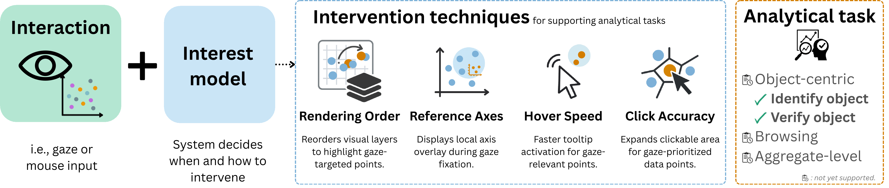
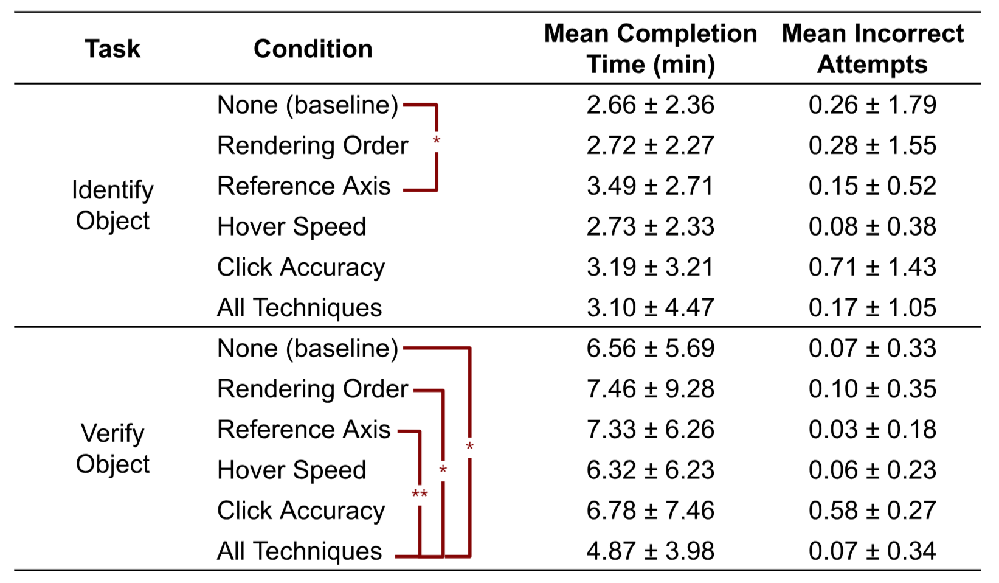

ETRA 2026
Designing Implicit Gaze-Aware Interactions for Scatterplots
A task-driven approach to adapting visualization interfaces in real time, matching user attention without requiring explicit input.
A task-driven approach to adapting visualization interfaces in real time, matching user attention without requiring explicit input.
We present a task-driven approach to designing implicit gaze-aware interactions for scatterplot analysis. Building on Sarikaya and Gleicher’s taxonomy of scatterplot tasks, we focus on two foundational object-centric tasks—Identify Object and Verify Object—to guide the development of real-time, gaze-responsive interventions. Our design uses a gaze-based interest model to adapt the visualization interface without requiring explicit input from the user. We contribute four interaction techniques: rendering order, reference axes, hover speed, and click accuracy. These techniques respond passively to user attention, aiming to reduce occlusion, improve feedback responsiveness, and support more precise interactions. A user study with 24 participants demonstrates that gaze-aware adaptations can improve task efficiency and reduce cognitive load. Hover Speed emerged as the most effective and preferred technique, while other interventions showed promise with opportunities for refinement. Our findings underscore the potential of real-time attention modelling in visualization systems and motivate future research on adaptive, user-aware interaction design.

Overview of the gaze-aware interaction workflow. Gaze input informs an interest model, driving the system to adapt visualization behavior.
Building on scatterplot task taxonomies, we focus on identifying and verifying objects to develop real-time, gaze-responsive interventions. Our gaze-based interest model infers intent directly from eye movements, predicting interest rather than just tracking positions.
We introduce four core interactions: rendering order, reference axes, hover speed, and click accuracy. These techniques passively respond to user attention, reducing occlusion and offering greater precision—demonstrating how implicit interaction can drastically reduce cognitive load.
Dynamically adjusts the rendering order based on the user's focus. During saccadic movements, points associated with the inferred interest color are re-rendered on top to enable faster identification without distraction.
When fixating on a dense region, a contextual axis overlay appears locally. This supports reading values accurately in visually crowded domains.
Tooltips for points of inferred interest appear significantly faster than non-interest points. Evaluated as the most preferred technique, it reduced tooltip delay by 61% overall.
Adjusts the clickable areas using a weighted Voronoi diagram tailored by interest. Points holding visual attention subtly expand their interaction regions, mitigating misclicks in dense plots.
Evaluated with 24 participants, gaze-driven interventions showed measurable improvements for visual analysis tasks and reduced perceived cognitive latency.
The Hover Speed technique saved over a minute of cumulative delay per user (61% reduction), marking it the preferred interaction. 83.3% of participants reported it as non-distracting and naturally additive.
In combined technique tests, participants completed complex Verify Object tasks significantly faster (avg 4.9 min vs 6.4 min) and reported the lowest workload (NASA-TLX down to 9.1 vs 12.8).
While Hover Speed excelled, Rendering Order and Reference Axis updates had mixed results, with some users perceiving them as unexpected visual shifts. However, Click Accuracy helped participants click more confidently once recognized.
The passive interest model correctly predicted target color focus in 50% of trials, significantly above the 33% random baseline. Over 90% of participants expressed intent to use gaze interactions in future analytical environments.

Mean (±SD) completion time and incorrect attempts per condition and task. Brackets indicate significant pairwise differences (* p < .05, ** p < .001, Bonferroni-corrected).
Researcher, MSc
Ontario Tech University
Researcher, MSc
Ontario Tech University
Researcher, Associate Professor
Ontario Tech University
Professor
Ontario Tech University